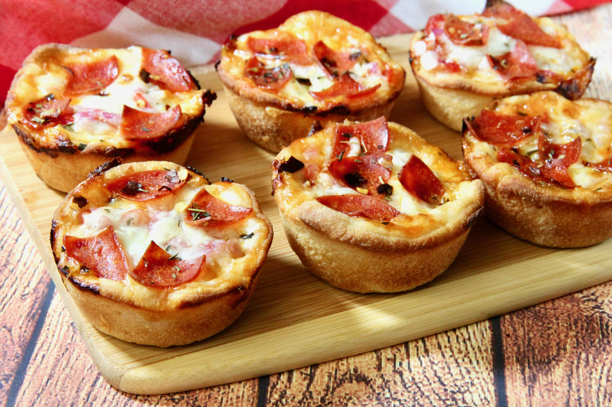

Description
They're portable, sort of like a mini pizza, except shaped like a cupcake!
They're a great snack and a great addition to a game day buffet. Feel free to customize to your family's tastes with additions like ham,sausage, bell peppers, etc.
Ingredients
- ccooking spray
- 8 medium cherry tomatoes
- 1 can refrigerated pizza crust
- 8 teaspoons shredded mozzarella cheese
- 1/2 cup pizza sauce
- 8 slices pepperoni, quarted
- Italian seasoning to taste
Instructions
- Preheat the oven to 400 degrees F. Spray 8 cups of a muffin tin with cooking spray.
- Finely chop cherry tomatoes and drain any liquid. Set aside.
- Unroll pizza crust on a floured work surface and roll out thinly into a large rectangle. Using a 4-inch round cookie or biscuit cutter, cut 8 circles in the dough. Place dough circles in the prepared muffin cups, pressing dough into the bottom and up the sides of each cup.
- Drop 1 teaspoon mozzarella into each cup. Top with 1 tablespoon of pizza sauce. Add chopped tomatoes and red onions. Add 1 tablespoon of mozzarella to each cup, and top with pepperoni. Sprinkle each cup with Italian seasoning, red pepper flakes, and garlic salt to taste.
- Bake in hte preheated oven until cheese is bubbling and melted, 14 t0 15 minutes. Remove from the oven and let cool in the tin for about 5 minutes. Remove from the tin and serve hot.
Back to recipe page
Return to top